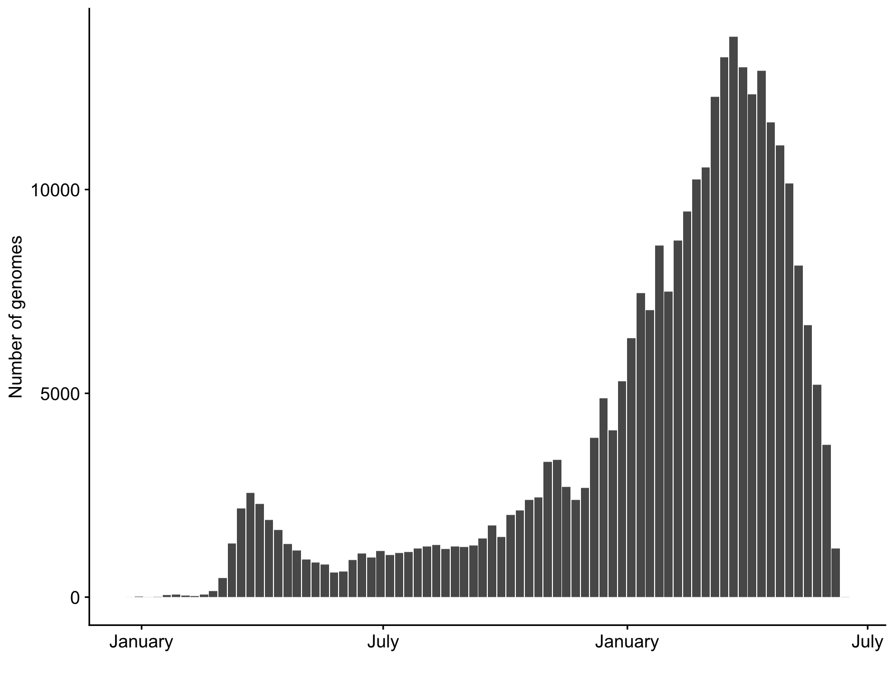
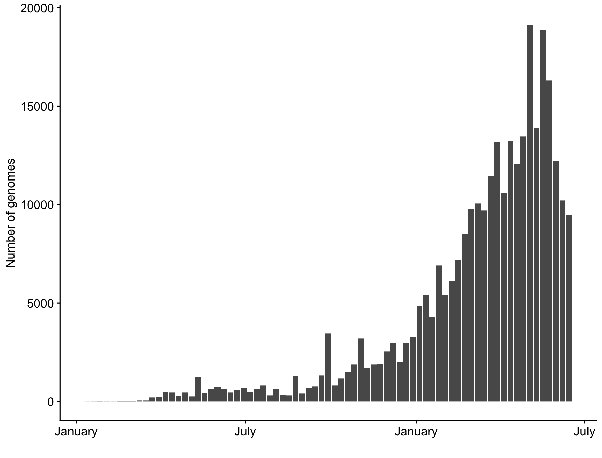
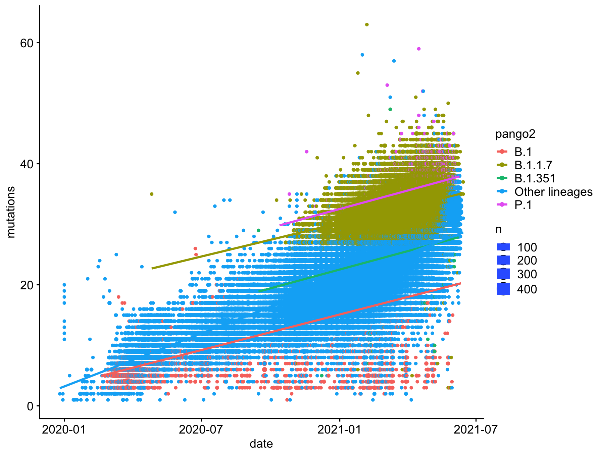
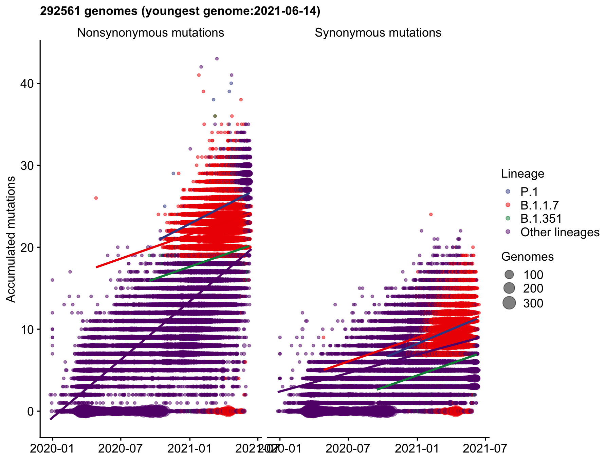
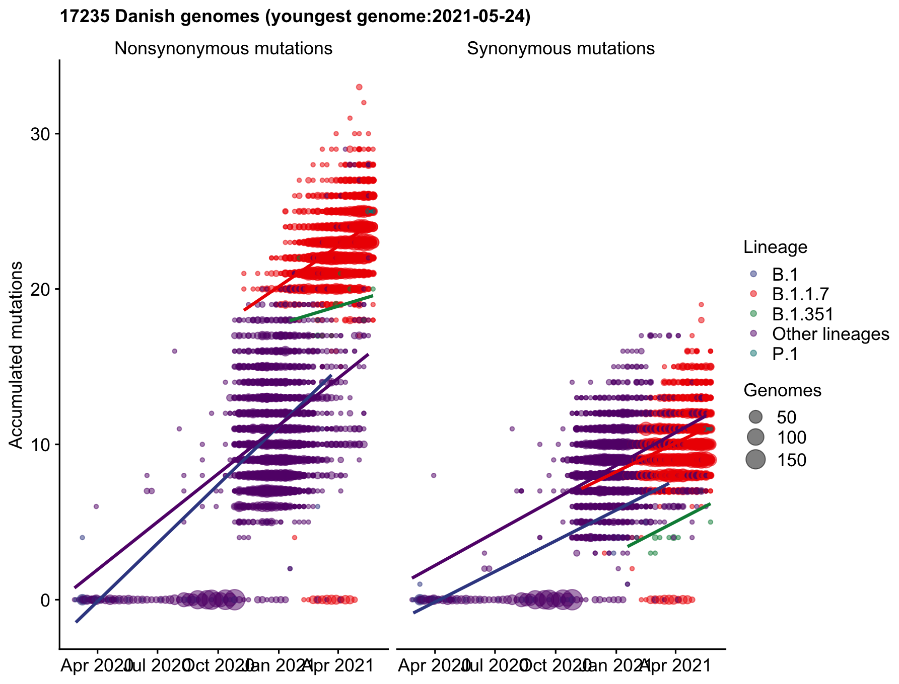
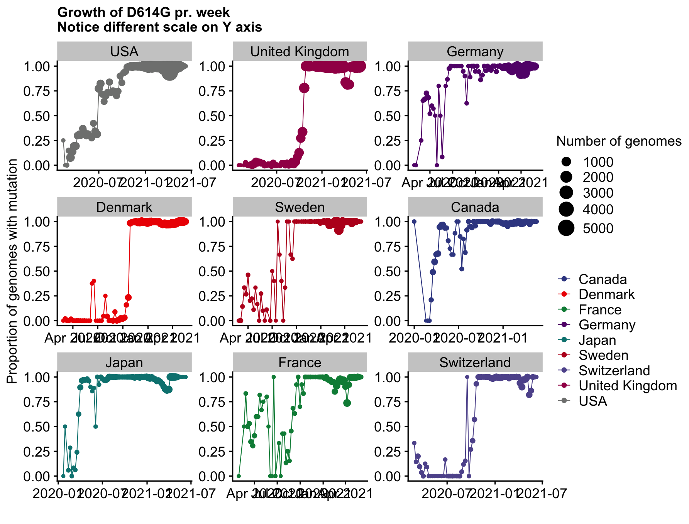
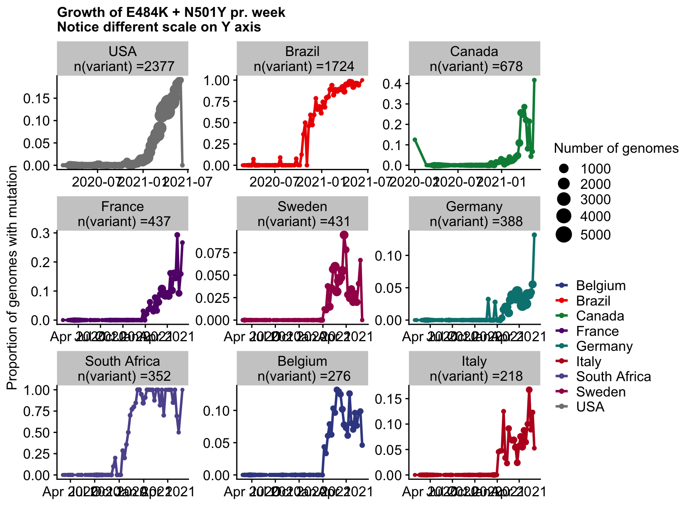
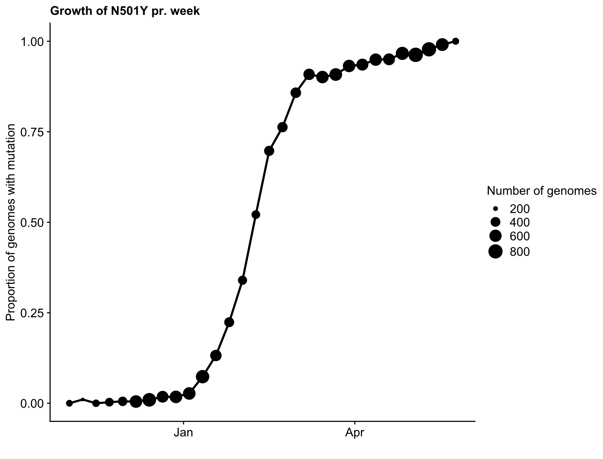

Working with gisaid data (snpeff aka ‘Palles pipeline’)
Palle Villesen
Last update: 2021-07-01 10:03:17
Last updated: 2021-07-01
Checks: 6 1
Knit directory: sars-cov2-gisaid/
This reproducible R Markdown analysis was created with workflowr (version 1.6.2). The Checks tab describes the reproducibility checks that were applied when the results were created. The Past versions tab lists the development history.
The R Markdown is untracked by Git. To know which version of the R Markdown file created these results, you’ll want to first commit it to the Git repo. If you’re still working on the analysis, you can ignore this warning. When you’re finished, you can run wflow_publish to commit the R Markdown file and build the HTML.
Great job! The global environment was empty. Objects defined in the global environment can affect the analysis in your R Markdown file in unknown ways. For reproduciblity it’s best to always run the code in an empty environment.
The command set.seed(20210408) was run prior to running the code in the R Markdown file. Setting a seed ensures that any results that rely on randomness, e.g. subsampling or permutations, are reproducible.
Great job! Recording the operating system, R version, and package versions is critical for reproducibility.
Nice! There were no cached chunks for this analysis, so you can be confident that you successfully produced the results during this run.
Great job! Using relative paths to the files within your workflowr project makes it easier to run your code on other machines.
Great! You are using Git for version control. Tracking code development and connecting the code version to the results is critical for reproducibility.
The results in this page were generated with repository version 9c3698e. See the Past versions tab to see a history of the changes made to the R Markdown and HTML files.
Note that you need to be careful to ensure that all relevant files for the analysis have been committed to Git prior to generating the results (you can use wflow_publish or wflow_git_commit). workflowr only checks the R Markdown file, but you know if there are other scripts or data files that it depends on. Below is the status of the Git repository when the results were generated:
Ignored files:
Ignored: .DS_Store
Ignored: .Rhistory
Ignored: .Rproj.user/
Ignored: analysis/.Rhistory
Ignored: data/.DS_Store
Untracked files:
Untracked: analysis/1_working_with_the_data.snpeff.v2.gisaid_v2.0.rmd
Untracked: analysis/2_human_lineage_mutations.snpeff.v1.rmd
Untracked: analysis/hard_coded_params.R
Untracked: code/make_debug_miniature_dataset.R
Untracked: code/make_genome_positions.R
Untracked: data/2021-04-09/
Untracked: data/MutCounts_with_covariates.csv
Untracked: data/proteins_sarscov2_genome_positions.rds
Untracked: how_to_work_together.md
Untracked: output/README.html
Unstaged changes:
Modified: README.md
Modified: _workflowr.yml
Deleted: analysis/S0_creating_data_bywindows_lineages_OBSOLETE.Rmd
Modified: analysis/S0_creating_data_bywindows_lineages_byphase.Rmd
Modified: analysis/S1_adding_covariates_multiple_lineage_early_late.Rmd
Modified: analysis/S1_adding_covariates_multiple_lineage_period2.Rmd
Modified: analysis/S1_adding_covariates_multiple_lineage_period3.Rmd
Modified: analysis/S2_mutations_counts_covs_exploration_visuals.Rmd
Modified: analysis/S2_mutations_counts_covs_exploration_visuals_period2.Rmd
Modified: analysis/S2_mutations_counts_covs_exploration_visuals_period3.Rmd
Modified: analysis/S4_mutation_counts_models_period1.Rmd
Modified: analysis/S4_mutation_counts_models_period2.Rmd
Modified: analysis/S4_mutation_counts_models_period3.Rmd
Modified: analysis/_site.yml
Modified: analysis/about.Rmd
Modified: analysis/index.Rmd
Modified: code/README.md
Modified: data/README.md
Modified: output/README.md
Note that any generated files, e.g. HTML, png, CSS, etc., are not included in this status report because it is ok for generated content to have uncommitted changes.
There are no past versions. Publish this analysis with wflow_publish() to start tracking its development.
# data_path <- "data/2021-06-18/"
source("analysis/hard_coded_params.R")Using data version: data/2021-06-18/
History
Added by TB in sars-cov2-gisaid workflowr project based on script written by PV
Init
library(tidyverse)
library(cowplot) # For theme
library(lubridate)
library(ggsci)
library(ggrepel)
text_base_size <- 12
fig.witdh <- 210
fig.height <- 160
ggplot_text_size <- text_base_size / ggplot2::.pt
# Now use: geom_text(..., size = ggplot_text_size)
theme_set(theme_cowplot(font_size = text_base_size,
rel_small = 1, rel_tiny = 1,
rel_large = 1))
knitr::opts_chunk$set(fig.width = fig.witdh/25.4)
knitr::opts_chunk$set(fig.height = fig.height/25.4)
knitr::opts_chunk$set(dpi = 108)
mutations <- read_rds(paste(data_path, "/mutations_snpeff_annotated_tidy_300K_downsampled.rds", sep=""))
metadata <- read_rds(paste(data_path, "/metadata_snpeff_tidy_300K_downsampled.rds",sep=""))
x <- Sys.setlocale(locale = "en_US.UTF-8") # CHeck with PV NB on Windows you might want to substitute with "English"
rm(x)
dim(mutations)[1] 10229841 14dim(metadata)[1] 300000 37Data structure
x <- head(mutations, n = 1) %>% t()
tibble(variable = rownames(x), value=x[,1]) %>%
knitr::kable()| variable | value |
|---|---|
| id | 1000007 |
| CHROM | NC_045512 |
| position | 445 |
| ref_base | T |
| variant_base | C |
| gene | ORF1ab_pp1a |
| biotype | protein_coding |
| impact | LOW |
| effect | synonymous_variant |
| hgvs_c | c.180T>C |
| hgvs_p | p.Val60Val |
| aa_position | 60 |
| type | S |
| aa_change | V60V |
x <- head(metadata, n = 1) %>% t()
tibble(variable = rownames(x), value=x[,1]) %>%
knitr::kable()| variable | value |
|---|---|
| id | 1578694 |
| Virus name | hCoV-19/Norway/5612/2021 |
| Type | betacoronavirus |
| Accession ID | EPI_ISL_1578694 |
| Collection date | 2021-03-02 |
| Location | Europe / Norway / More og Romsdal |
| region | Europe |
| country | Norway |
| division | More og Romsdal |
| Additional location information | NA |
| Sequence length | 29809 |
| Host | Human |
| Patient age | unknown |
| Gender | unknown |
| Clade | GRY |
| pangolin_lineage | B.1.1.7 |
| Pangolin version | 2021-06-05 |
| Variant | NA |
| AA Substitutions | (Spike_H69del,NS8_Q27stop,NSP3_T183I,Spike_T716I,NSP6_S106del,N_R203K,Spike_A570D,NSP13_K460R,NSP13_P78S,Spike_N501Y,NSP3_I1412T,NS8_R52I,Spike_P681H,Spike_Y144del,NS8_P93T,NSP6_G107del,NSP3_A890D,Spike_D1118H,NS3_P42H,NSP6_F108del,NS8_Y73C,N_G204R,Spike_V70del,NSP1_H81Y,NSP12_P323L,Spike_D614G,N_D3L,Spike_S982A,N_S235F) |
| date_submitted | 2021-04-13 |
| Is reference? | NA |
| Is complete? | TRUE |
| Is high coverage? | TRUE |
| Is low coverage? | NA |
| N-Content | 0.002415378 |
| GC-Content | 0.3795944 |
| species | Human |
| date | 2021-03-02 |
| Patient status | NA |
| Passage | NA |
| Specimen | NA |
| Additional host information | NA |
| Lineage | NA |
| Sampling strategy | NA |
| Last vaccinated | NA |
| count_N | 24 |
| count_S | 8 |
rm(x)Overview of data
pd <- tibble() %>%
bind_rows(tibble("Description" = "Genomes total",
"n" = metadata %>% select(id) %>% distinct() %>% count() %>% pull(n) )) %>%
bind_rows(tibble("Description" = "Mutations in these genomes",
"n" = mutations %>% distinct(id, position) %>% count() %>% pull(n))) %>%
bind_rows(tibble("Description" = "Genomes with mutations in protein coding regions",
"n" = mutations %>% select(id) %>% distinct() %>% count() %>% pull(n) )) %>%
bind_rows(tibble("Description" = "Unique mutations total",
"n" = mutations %>% select(position, variant_base) %>% distinct() %>% count() %>% pull(n) )) %>%
bind_rows(tibble("Description" = "Unique positions mutated",
"n" = mutations %>% select(position) %>% distinct() %>% count() %>% pull(n) )) %>%
bind_rows(tibble("Description" = "Unique Synonymous mutations",
"n" = mutations %>% filter(type=="S") %>% select(position, variant_base) %>% distinct() %>% count() %>% pull(n) )) %>%
bind_rows(tibble("Description" = "Unique Nonsynonymous mutations",
"n" = mutations %>% filter(type=="N") %>% select(position, variant_base) %>% distinct() %>% count() %>% pull(n) )) %>%
bind_rows(tibble("Description" = "Sites with Synonymous mutations",
"n" = mutations %>% filter(type=="S") %>% select(position) %>% distinct() %>% count() %>% pull(n) )) %>%
bind_rows(tibble("Description" = "Sites with Nonsynonymous mutations",
"n" = mutations %>% filter(type=="N") %>% select(position) %>% distinct() %>% count() %>% pull(n) )) %>%
bind_rows(tibble("Description" = "Human genomes",
"n" = metadata %>% filter(species=="Human") %>% count() %>% pull(n) )) %>%
bind_rows(tibble("Description" = "Mink genomes",
"n" = metadata %>% filter(species=="Mink") %>% count() %>% pull(n) )) %>%
bind_rows(tibble("Description" = "Other genomes",
"n" = metadata %>% filter(!species %in% c("Human","Mink")) %>% count() %>% pull(n) )) %>%
bind_rows(tibble("Description" = "Samples with Patient status",
"n" = metadata %>% filter(!is.na(`Patient status`)) %>% count() %>% pull(n) )) %>%
{.}
knitr::kable(pd)| Description | n |
|---|---|
| Genomes total | 300000 |
| Mutations in these genomes | 7187883 |
| Genomes with mutations in protein coding regions | 267845 |
| Unique mutations total | 41232 |
| Unique positions mutated | 24179 |
| Unique Synonymous mutations | 14338 |
| Unique Nonsynonymous mutations | 26898 |
| Sites with Synonymous mutations | 9871 |
| Sites with Nonsynonymous mutations | 16963 |
| Human genomes | 299858 |
| Mink genomes | 142 |
| Other genomes | 0 |
| Samples with Patient status | 2935 |
Examples
Patient metadata
Date of collection
# Flag this
# metadata %>%
# filter(species=="Human") %>%
# filter(!is.na(`Patient status`)) %>%
# mutate(date2=floor_date(ymd(`Collection date`),"month")) %>%
# count(date2) %>%
# knitr::kable()
metadata %>%
filter(species=="Human") %>%
filter(!is.na(`Patient status`)) %>%
mutate(date2=str_sub(`Collection date`, start = 1, end = 7)) %>%
count(date2) %>%
knitr::kable()| date2 | n |
|---|---|
| 2020 | 1 |
| 2020-03 | 25 |
| 2020-04 | 26 |
| 2020-05 | 43 |
| 2020-06 | 33 |
| 2020-07 | 36 |
| 2020-08 | 36 |
| 2020-09 | 12 |
| 2020-10 | 26 |
| 2020-11 | 34 |
| 2020-12 | 104 |
| 2021 | 41 |
| 2021-01 | 317 |
| 2021-02 | 972 |
| 2021-03 | 1213 |
| 2021-04 | 13 |
Region and month
metadata %>%
filter(species=="Human") %>%
filter(!is.na(`Patient status`)) %>%
mutate(date2=floor_date(date,"month")) %>%
count(date2,region) %>%
pivot_wider(names_from = region, values_from=n, values_fill=0 ) %>%
knitr::kable()| date2 | Africa | Asia | South America | North America | Europe |
|---|---|---|---|---|---|
| 2020-03-01 | 2 | 2 | 18 | 0 | 0 |
| 2020-04-01 | 2 | 0 | 9 | 13 | 0 |
| 2020-05-01 | 1 | 1 | 13 | 23 | 2 |
| 2020-06-01 | 0 | 3 | 0 | 22 | 1 |
| 2020-07-01 | 2 | 8 | 3 | 6 | 0 |
| 2020-08-01 | 0 | 1 | 23 | 1 | 3 |
| 2020-09-01 | 0 | 1 | 4 | 1 | 4 |
| 2020-10-01 | 0 | 10 | 2 | 1 | 13 |
| 2020-11-01 | 0 | 19 | 1 | 4 | 9 |
| 2020-12-01 | 3 | 27 | 14 | 19 | 38 |
| 2021-01-01 | 40 | 52 | 57 | 58 | 104 |
| 2021-02-01 | 12 | 38 | 58 | 259 | 568 |
| 2021-03-01 | 0 | 19 | 5 | 182 | 992 |
| 2021-04-01 | 0 | 1 | 0 | 0 | 12 |
| NA | 2 | 42 | 11 | 7 | 84 |
Using bins of mutations as date proxy
metadata %>%
filter(species=="Human") %>%
filter(!is.na(`Patient status`)) %>%
mutate(mutation_bin=cut(count_S+count_N, breaks = seq(0,100,by = 5))) %>%
mutate(date2=floor_date(date,"month")) %>%
count(mutation_bin,date2) %>%
pivot_wider(names_from = mutation_bin, values_from=n, values_fill=0 ) %>%
knitr::kable()| date2 | (0,5] | (5,10] | (10,15] | (15,20] | (20,25] | (25,30] | (30,35] | (35,40] | (40,45] | NA |
|---|---|---|---|---|---|---|---|---|---|---|
| 2020-03-01 | 2 | 17 | 3 | 0 | 0 | 0 | 0 | 0 | 0 | 0 |
| 2020-04-01 | 3 | 14 | 7 | 0 | 0 | 0 | 0 | 0 | 0 | 0 |
| 2020-05-01 | 3 | 21 | 13 | 2 | 0 | 0 | 1 | 0 | 0 | 0 |
| 2020-06-01 | 2 | 11 | 11 | 2 | 0 | 0 | 0 | 0 | 0 | 0 |
| 2020-12-01 | 1 | 6 | 21 | 41 | 18 | 7 | 7 | 0 | 0 | 0 |
| 2021-01-01 | 1 | 3 | 21 | 77 | 102 | 57 | 43 | 5 | 1 | 1 |
| 2021-02-01 | 1 | 2 | 21 | 160 | 260 | 203 | 238 | 48 | 0 | 2 |
| NA | 2 | 8 | 27 | 12 | 22 | 41 | 31 | 3 | 0 | 0 |
| 2020-07-01 | 0 | 7 | 10 | 0 | 1 | 0 | 1 | 0 | 0 | 0 |
| 2020-08-01 | 0 | 5 | 18 | 3 | 2 | 0 | 0 | 0 | 0 | 0 |
| 2020-10-01 | 0 | 1 | 12 | 13 | 0 | 0 | 0 | 0 | 0 | 0 |
| 2020-11-01 | 0 | 1 | 6 | 20 | 2 | 3 | 1 | 0 | 0 | 0 |
| 2020-09-01 | 0 | 0 | 4 | 6 | 0 | 0 | 0 | 0 | 0 | 0 |
| 2021-03-01 | 0 | 0 | 5 | 56 | 173 | 336 | 562 | 59 | 1 | 6 |
| 2021-04-01 | 0 | 0 | 0 | 0 | 0 | 5 | 8 | 0 | 0 | 0 |
Tagging patient genomes with D614G mutation
Simple example of coding metadata with a specific mutation
tmp1 <- mutations %>%
filter(gene=="S" & aa_change=="D614G")
pd <- metadata %>%
filter(species=="Human") %>%
filter(!is.na(`Patient status`)) %>%
mutate(mutation = ifelse(id %in% tmp1$id, "Mutated", "No mutation"))
pd %>%
count(mutation) %>%
knitr::kable()| mutation | n |
|---|---|
| Mutated | 2883 |
| No mutation | 49 |
Tagging all genomes with N501Y mutation
Simple example of coding metadata with a specific mutation
tmp1 <- mutations %>%
filter(hgvs_p=="p.Asn501Tyr")
pd <- metadata %>%
filter(species=="Human") %>%
mutate(mutation = ifelse(id %in% tmp1$id, "Mutated", "No mutation"))
pd %>%
count(mutation) %>%
knitr::kable()| mutation | n |
|---|---|
| Mutated | 147796 |
| No mutation | 152062 |
Gender example
Beware! This is the raw patient metadata - they need to be cleaned!
tmp1 <- mutations %>%
filter(aa_change=="N501Y")
pd <- metadata %>%
filter(species=="Human") %>%
mutate(mutation = ifelse(id %in% tmp1$id, "Has mutation", "Wildtype"))
pd %>%
group_by(`Gender`) %>%
count(mutation) %>%
knitr::kable()| Gender | mutation | n |
|---|---|---|
| ? | Has mutation | 1 |
| 0 | Has mutation | 1 |
| 11 months | Has mutation | 1 |
| 14.0 | Has mutation | 1 |
| 17 | Wildtype | 1 |
| 18.0 | Has mutation | 1 |
| 20 | Wildtype | 2 |
| 21.0 | Has mutation | 3 |
| 21.0 | Wildtype | 1 |
| 22.0 | Has mutation | 3 |
| 22.0 | Wildtype | 1 |
| 23 | Wildtype | 1 |
| 23.0 | Has mutation | 2 |
| 23.0 | Wildtype | 1 |
| 24.0 | Has mutation | 1 |
| 25 | Wildtype | 1 |
| 25.0 | Has mutation | 4 |
| 26 | Wildtype | 2 |
| 26.0 | Has mutation | 1 |
| 27 | Has mutation | 1 |
| 27.0 | Has mutation | 2 |
| 28 | Wildtype | 3 |
| 28.0 | Has mutation | 1 |
| 28.0 | Wildtype | 1 |
| 29 | Wildtype | 1 |
| 29.0 | Wildtype | 1 |
| 3.0 | Has mutation | 1 |
| 30 | Wildtype | 1 |
| 30.0 | Wildtype | 2 |
| 31 | Wildtype | 1 |
| 31.0 | Has mutation | 1 |
| 32 | Has mutation | 1 |
| 32 | Wildtype | 3 |
| 33 | Has mutation | 2 |
| 33 | Wildtype | 2 |
| 34 | Wildtype | 1 |
| 35 | Has mutation | 1 |
| 35.0 | Wildtype | 4 |
| 36 | Wildtype | 1 |
| 36.0 | Wildtype | 1 |
| 37 | Has mutation | 1 |
| 37 | Wildtype | 2 |
| 37.0 | Has mutation | 1 |
| 38 | Has mutation | 1 |
| 38.0 | Has mutation | 2 |
| 39.0 | Wildtype | 1 |
| 40.0 | Wildtype | 1 |
| 41 | Has mutation | 1 |
| 41 | Wildtype | 1 |
| 41.0 | Has mutation | 3 |
| 42 | Wildtype | 2 |
| 42.0 | Has mutation | 2 |
| 43 | Has mutation | 1 |
| 43 | Wildtype | 2 |
| 44 | Wildtype | 1 |
| 44.0 | Wildtype | 1 |
| 45 | Has mutation | 1 |
| 45 | Wildtype | 1 |
| 45.0 | Wildtype | 1 |
| 46 | Has mutation | 1 |
| 48 | Wildtype | 1 |
| 48.0 | Wildtype | 1 |
| 49 | Wildtype | 2 |
| 50 | Has mutation | 1 |
| 50 | Wildtype | 3 |
| 51.0 | Has mutation | 1 |
| 51.0 | Wildtype | 1 |
| 52 | Wildtype | 3 |
| 52.0 | Has mutation | 2 |
| 54 | Wildtype | 2 |
| 55 | Wildtype | 2 |
| 56 | Wildtype | 1 |
| 57 | Wildtype | 1 |
| 58 | Wildtype | 1 |
| 58.0 | Wildtype | 1 |
| 59 | Wildtype | 2 |
| 59.0 | Wildtype | 1 |
| 6.0 | Has mutation | 1 |
| 60 | Wildtype | 2 |
| 61 | Has mutation | 1 |
| 61 | Wildtype | 1 |
| 61.0 | Wildtype | 1 |
| 63.0 | Wildtype | 1 |
| 64 | Wildtype | 2 |
| 64.0 | Has mutation | 1 |
| 65 | Wildtype | 1 |
| 66 | Wildtype | 1 |
| 67 | Wildtype | 3 |
| 68 | Wildtype | 1 |
| 70 | Has mutation | 1 |
| 71 | Wildtype | 1 |
| 73.0 | Wildtype | 1 |
| 74.0 | Wildtype | 1 |
| 77 | Has mutation | 1 |
| 83 | Wildtype | 1 |
| 87 | Has mutation | 1 |
| 91 | Wildtype | 1 |
| 94 | Wildtype | 1 |
| Ambiguous | Has mutation | 14 |
| Ambiguous | Wildtype | 20 |
| F | Has mutation | 2 |
| Famale | Has mutation | 8 |
| Famale | Wildtype | 1 |
| female | Has mutation | 1 |
| female | Wildtype | 2 |
| Female | Has mutation | 24345 |
| Female | Wildtype | 27194 |
| FeMale | Wildtype | 2 |
| FemaleeMaleale | Wildtype | 3 |
| Femle | Wildtype | 1 |
| Femmina | Has mutation | 9 |
| FFemale | Wildtype | 1 |
| Human | Has mutation | 12 |
| Human | Wildtype | 5 |
| I | Wildtype | 1 |
| Inconnue | Has mutation | 1 |
| M | Has mutation | 6 |
| M | Wildtype | 1 |
| Ma+L9le | Has mutation | 1 |
| male | Has mutation | 1 |
| male | Wildtype | 3 |
| Male | Has mutation | 23156 |
| Male | Wildtype | 27023 |
| Maleale | Wildtype | 3 |
| Maschio | Has mutation | 7 |
| Moteris | Has mutation | 17 |
| Moteris | Wildtype | 4 |
| Na | Has mutation | 2 |
| Na | Wildtype | 2 |
| Not applicable | Has mutation | 5 |
| Not applicable | Wildtype | 6 |
| not provided | Has mutation | 2 |
| O | Has mutation | 1 |
| U | Has mutation | 4 |
| U | Wildtype | 1 |
| unknow | Wildtype | 3 |
| unknown | Has mutation | 100091 |
| unknown | Wildtype | 97633 |
| Unknown | Has mutation | 41 |
| Unknown | Wildtype | 37 |
| Unknown / Not Stated | Wildtype | 1 |
| Unknown/not stated | Has mutation | 1 |
| unknwon | Has mutation | 1 |
| unknwon | Wildtype | 1 |
| unkown | Has mutation | 1 |
| unkown | Wildtype | 7 |
| Unkown | Wildtype | 8 |
| V | Has mutation | 1 |
| V | Wildtype | 1 |
| Vyras | Has mutation | 12 |
| Vyras | Wildtype | 4 |
| Y | Has mutation | 1 |
| NA | Wildtype | 8 |
pd %>%
mutate(Gender = str_to_lower(Gender)) %>%
mutate(Gender = ifelse(Gender=="woman", "female", Gender)) %>%
mutate(Gender = ifelse(Gender=="unknown", "unknown", Gender)) %>%
group_by(region,Gender) %>%
summarise(mutated = sum(mutation=="Mutated"),
not_mutated = sum(mutation!="Mutated")) %>%
arrange(region, Gender) %>%
knitr::kable()`summarise()` regrouping output by 'region' (override with `.groups` argument)| region | Gender | mutated | not_mutated |
|---|---|---|---|
| Africa | female | 0 | 862 |
| Africa | male | 0 | 769 |
| Africa | unknown | 0 | 420 |
| Asia | 17 | 0 | 1 |
| Asia | 28 | 0 | 1 |
| Asia | 29 | 0 | 1 |
| Asia | 31 | 0 | 1 |
| Asia | 33 | 0 | 1 |
| Asia | 34 | 0 | 1 |
| Asia | 45.0 | 0 | 1 |
| Asia | 49 | 0 | 1 |
| Asia | 50 | 0 | 1 |
| Asia | 51.0 | 0 | 1 |
| Asia | 59 | 0 | 1 |
| Asia | 60 | 0 | 1 |
| Asia | 61.0 | 0 | 1 |
| Asia | 67 | 0 | 1 |
| Asia | 73.0 | 0 | 1 |
| Asia | female | 0 | 2979 |
| Asia | femaleemaleale | 0 | 3 |
| Asia | femle | 0 | 1 |
| Asia | ffemale | 0 | 1 |
| Asia | male | 0 | 4432 |
| Asia | maleale | 0 | 3 |
| Asia | unknown | 0 | 11909 |
| Asia | unknwon | 0 | 2 |
| Asia | unkown | 0 | 8 |
| Europe | ? | 0 | 1 |
| Europe | 22.0 | 0 | 1 |
| Europe | 26.0 | 0 | 1 |
| Europe | 37.0 | 0 | 1 |
| Europe | 41.0 | 0 | 1 |
| Europe | 6.0 | 0 | 1 |
| Europe | f | 0 | 2 |
| Europe | famale | 0 | 9 |
| Europe | female | 0 | 19681 |
| Europe | femmina | 0 | 9 |
| Europe | human | 0 | 17 |
| Europe | i | 0 | 1 |
| Europe | inconnue | 0 | 1 |
| Europe | m | 0 | 7 |
| Europe | ma+l9le | 0 | 1 |
| Europe | male | 0 | 18904 |
| Europe | maschio | 0 | 7 |
| Europe | moteris | 0 | 21 |
| Europe | na | 0 | 1 |
| Europe | not provided | 0 | 2 |
| Europe | o | 0 | 1 |
| Europe | u | 0 | 3 |
| Europe | unknow | 0 | 3 |
| Europe | unknown | 0 | 143237 |
| Europe | v | 0 | 2 |
| Europe | vyras | 0 | 16 |
| Europe | NA | 0 | 1 |
| North America | 0 | 0 | 1 |
| North America | 11 months | 0 | 1 |
| North America | 14.0 | 0 | 1 |
| North America | 18.0 | 0 | 1 |
| North America | 20 | 0 | 2 |
| North America | 21.0 | 0 | 3 |
| North America | 22.0 | 0 | 3 |
| North America | 23 | 0 | 1 |
| North America | 23.0 | 0 | 3 |
| North America | 24.0 | 0 | 1 |
| North America | 25 | 0 | 1 |
| North America | 25.0 | 0 | 4 |
| North America | 26 | 0 | 2 |
| North America | 27 | 0 | 1 |
| North America | 27.0 | 0 | 2 |
| North America | 28 | 0 | 2 |
| North America | 28.0 | 0 | 1 |
| North America | 29.0 | 0 | 1 |
| North America | 3.0 | 0 | 1 |
| North America | 30 | 0 | 1 |
| North America | 30.0 | 0 | 1 |
| North America | 31.0 | 0 | 1 |
| North America | 32 | 0 | 4 |
| North America | 33 | 0 | 3 |
| North America | 35 | 0 | 1 |
| North America | 35.0 | 0 | 1 |
| North America | 36 | 0 | 1 |
| North America | 36.0 | 0 | 1 |
| North America | 37 | 0 | 3 |
| North America | 38 | 0 | 1 |
| North America | 38.0 | 0 | 2 |
| North America | 39.0 | 0 | 1 |
| North America | 41 | 0 | 2 |
| North America | 41.0 | 0 | 2 |
| North America | 42 | 0 | 2 |
| North America | 42.0 | 0 | 2 |
| North America | 43 | 0 | 3 |
| North America | 44 | 0 | 1 |
| North America | 44.0 | 0 | 1 |
| North America | 45 | 0 | 2 |
| North America | 46 | 0 | 1 |
| North America | 48 | 0 | 1 |
| North America | 49 | 0 | 1 |
| North America | 50 | 0 | 3 |
| North America | 51.0 | 0 | 1 |
| North America | 52 | 0 | 3 |
| North America | 52.0 | 0 | 2 |
| North America | 54 | 0 | 2 |
| North America | 55 | 0 | 2 |
| North America | 56 | 0 | 1 |
| North America | 57 | 0 | 1 |
| North America | 58 | 0 | 1 |
| North America | 58.0 | 0 | 1 |
| North America | 59 | 0 | 1 |
| North America | 59.0 | 0 | 1 |
| North America | 60 | 0 | 1 |
| North America | 61 | 0 | 2 |
| North America | 64 | 0 | 2 |
| North America | 64.0 | 0 | 1 |
| North America | 65 | 0 | 1 |
| North America | 66 | 0 | 1 |
| North America | 67 | 0 | 2 |
| North America | 68 | 0 | 1 |
| North America | 70 | 0 | 1 |
| North America | 71 | 0 | 1 |
| North America | 74.0 | 0 | 1 |
| North America | 77 | 0 | 1 |
| North America | 83 | 0 | 1 |
| North America | 87 | 0 | 1 |
| North America | 91 | 0 | 1 |
| North America | 94 | 0 | 1 |
| North America | ambiguous | 0 | 34 |
| North America | female | 0 | 25569 |
| North America | male | 0 | 23728 |
| North America | na | 0 | 3 |
| North America | not applicable | 0 | 11 |
| North America | u | 0 | 2 |
| North America | unknown | 0 | 39560 |
| North America | unknown / not stated | 0 | 1 |
| North America | unknown/not stated | 0 | 1 |
| North America | unkown | 0 | 6 |
| North America | y | 0 | 1 |
| North America | NA | 0 | 7 |
| Oceania | female | 0 | 1041 |
| Oceania | male | 0 | 951 |
| Oceania | unknown | 0 | 943 |
| South America | 21.0 | 0 | 1 |
| South America | 28.0 | 0 | 1 |
| South America | 30.0 | 0 | 1 |
| South America | 35.0 | 0 | 3 |
| South America | 40.0 | 0 | 1 |
| South America | 48.0 | 0 | 1 |
| South America | 63.0 | 0 | 1 |
| South America | female | 0 | 1412 |
| South America | male | 0 | 1399 |
| South America | unknown | 0 | 1733 |
| South America | unkown | 0 | 2 |
Gene focus
Genomes with mutations pr. gene
mutations %>%
group_by(gene, type) %>%
count() %>%
knitr::kable()| gene | type | n |
|---|---|---|
| E | N | 9050 |
| E | S | 5500 |
| M | N | 29466 |
| M | S | 77268 |
| N | N | 1251229 |
| N | S | 257915 |
| ORF10 | N | 32262 |
| ORF10 | S | 3544 |
| ORF1ab_pp1a | N | 1139362 |
| ORF1ab_pp1a | S | 1173823 |
| ORF1ab_pp1ab | N | 1807789 |
| ORF1ab_pp1ab | S | 1955825 |
| ORF3a | N | 204597 |
| ORF3a | S | 33166 |
| ORF6 | N | 7128 |
| ORF6 | S | 8440 |
| ORF7a | N | 46827 |
| ORF7a | S | 11858 |
| ORF7b | N | 14502 |
| ORF7b | S | 6337 |
| ORF8 | N | 371606 |
| ORF8 | S | 32476 |
| S | N | 1633028 |
| S | S | 116843 |
mutations %>%
group_by(gene) %>%
summarise(N=sum(type=="N"),
S=sum(type=="S"),
NS = N/S) %>%
arrange(desc(NS)) %>%
knitr::kable()`summarise()` ungrouping output (override with `.groups` argument)| gene | N | S | NS |
|---|---|---|---|
| S | 1633028 | 116843 | 13.9762587 |
| ORF8 | 371606 | 32476 | 11.4424806 |
| ORF10 | 32262 | 3544 | 9.1032731 |
| ORF3a | 204597 | 33166 | 6.1688778 |
| N | 1251229 | 257915 | 4.8513231 |
| ORF7a | 46827 | 11858 | 3.9489796 |
| ORF7b | 14502 | 6337 | 2.2884646 |
| E | 9050 | 5500 | 1.6454545 |
| ORF1ab_pp1a | 1139362 | 1173823 | 0.9706421 |
| ORF1ab_pp1ab | 1807789 | 1955825 | 0.9243102 |
| ORF6 | 7128 | 8440 | 0.8445498 |
| M | 29466 | 77268 | 0.3813480 |
Genomes sampled pr. week
pd <- metadata %>%
filter(species=="Human") %>%
mutate(date_bin = cut(date, breaks = "1 week")) %>%
group_by(date_bin) %>%
count()
newlevels <- sort(levels(pd$date_bin))
pd <- pd %>%
mutate(date_bin = fct_relevel(date_bin, newlevels)) %>%
ungroup() %>%
mutate(date_bin=ymd(date_bin))
ggplot(pd, aes(x=date_bin, y=n)) +
geom_col() +
xlab("Sample collection date") +
ylab("Number of genomes") +
scale_x_date(name = "", date_labels = "%B") +
NULLWarning: Removed 1 rows containing missing values (position_stack).
Genomes submitted pr. week
pd <- metadata %>%
filter(species=="Human") %>%
mutate(date_bin = cut(ymd(date_submitted), breaks = "1 week")) %>%
group_by(date_bin) %>%
count()
newlevels <- sort(levels(pd$date_bin))
pd <- pd %>%
mutate(date_bin = fct_relevel(date_bin, newlevels)) %>%
ungroup() %>%
mutate(date_bin=ymd(date_bin))
ggplot(pd, aes(x=date_bin, y=n)) +
geom_col() +
xlab("Sample submission date") +
ylab("Number of genomes") +
scale_x_date(name = "", date_labels = "%B") +
NULL
Mutational clock
tmp <- mutations %>%
group_by(id) %>%
distinct(position) %>%
summarise(mutations = n())`summarise()` ungrouping output (override with `.groups` argument)interesting_lineages <- c("B.1.1.7", "P.1", "B.1", "B.1.351")
pd <- metadata %>%
left_join(tmp) %>%
select(id, mutations,everything()) %>%
filter(species=="Human") %>%
mutate(pango2 = ifelse(pangolin_lineage %in% interesting_lineages,
pangolin_lineage, "Other lineages")) %>%
group_by(date,mutations,pango2) %>%
count()Joining, by = "id"ggplot(pd, aes(x=date, y=mutations, color=pango2, size=n)) +
geom_point() +
geom_smooth(aes(color=pango2), method="lm", se=F) +
NULL`geom_smooth()` using formula 'y ~ x'Warning: Removed 1023 rows containing non-finite values (stat_smooth).Warning: Removed 1023 rows containing missing values (geom_point).
World Mutational clock (Syn vs. Non-Syn)
interesting_lineages <- c("B.1.1.7", "P.1", "B.1.351")
tmp <- metadata %>%
filter(species=="Human") %>%
filter(!is.na(date)) %>%
mutate(pango2 = ifelse(pangolin_lineage %in% interesting_lineages,
pangolin_lineage, "Other lineages"))
pd <- tmp %>%
group_by(date,pango2, count_N, count_S) %>%
count() %>%
pivot_longer(names_to = "type",
values_to = "mutations",
cols = c(count_N, count_S)) %>%
mutate(type = fct_recode(type, "Synonymous mutations"="count_S",
"Nonsynonymous mutations"="count_N")) %>%
mutate(pango2 = factor(pango2,
levels=c("P.1", "B.1.1.7", "B.1.351", "Other lineages")
)
)
ggplot(pd, aes(x=date, y=mutations, color=pango2, size=n)) +
geom_point(alpha=0.5) +
geom_smooth(method="lm", se=F, size=1, show.legend = F) +
ylab("Accumulated mutations") +
facet_wrap(~type) +
theme(axis.title.x = element_blank()) +
scale_color_aaas(name="Lineage") +
scale_size_continuous(name = "Genomes") +
theme(strip.background = element_blank()) +
ggtitle(paste(nrow(tmp), " genomes (youngest genome:", max(pd$date), ")", sep=""))`geom_smooth()` using formula 'y ~ x'
DK Mutational clock (Syn vs. Non-Syn)
interesting_lineages <- c("B.1.1.7", "P.1", "B.1", "B.1.351")
tmp <- metadata %>%
filter(species=="Human" & country=="Denmark") %>%
mutate(pango2 = ifelse(pangolin_lineage %in% interesting_lineages,
pangolin_lineage, "Other lineages"))
pd <- tmp %>%
group_by(date,pango2, count_N, count_S) %>%
count() %>%
pivot_longer(names_to = "type",
values_to = "mutations",
cols = c(count_N, count_S)) %>%
mutate(type = fct_recode(type, "Synonymous mutations"="count_S",
"Nonsynonymous mutations"="count_N"))
ggplot(pd, aes(x=date, y=mutations, color=pango2, size=n)) +
geom_point(alpha=0.5) +
geom_smooth(method="lm", se=F, size=1, show.legend = F) +
ylab("Accumulated mutations") +
facet_wrap(~type) +
theme(axis.title.x = element_blank()) +
scale_color_aaas(name="Lineage") +
scale_size_continuous(name = "Genomes") +
theme(strip.background = element_blank()) +
ggtitle(paste(nrow(tmp), " Danish genomes (youngest genome:", max(pd$date), ")", sep="")) +
NULL`geom_smooth()` using formula 'y ~ x'
D614G frequency in weekly bins
tmp1 <- mutations %>%
filter(gene=="S" & aa_change=="D614G")
pd <- metadata %>%
filter(species=="Human") %>%
mutate(mutation = ifelse(id %in% tmp1$id, "mutated", "Other")) %>%
mutate(date_bin = cut(date, breaks = "week")) %>%
group_by(date_bin) %>%
count(mutation)
newlevels <- sort(levels(pd$date_bin))
pd <- pd %>%
mutate(date_bin = fct_relevel(date_bin, newlevels)) %>%
ungroup() %>%
mutate(date_bin=ymd(date_bin)) %>%
pivot_wider(names_from = mutation, values_from=n, values_fill =0)
ggplot(pd, aes(x=date_bin, y=mutated/(mutated+Other), size=mutated+Other))+ geom_point() +
geom_hline(yintercept = 1, linetype="dashed", color="#808080") +
xlab("") +
ylab("Proportion of genomes with mutation") +
scale_size("Number of genomes") +
scale_x_date(name = "", date_labels = "%B") +
NULLWarning: Removed 1 rows containing missing values (geom_point).
D614G around the world
tmp1 <- mutations %>%
filter(gene=="S" & aa_change=="D614G")
x <- metadata %>%
filter(species=="Human") %>%
mutate(mutation = ifelse(id %in% tmp1$id, "mutated", "Other")) %>%
group_by(country) %>%
summarise(n_vui=sum(mutation=="mutated"),
n_total=n()
) %>%
filter(n_vui > 10) %>%
arrange(desc(n_vui)) %>%
slice(1:9)`summarise()` ungrouping output (override with `.groups` argument)knitr::kable(x)| country | n_vui | n_total |
|---|---|---|
| USA | 69968 | 76942 |
| United Kingdom | 62277 | 75013 |
| Germany | 20257 | 20861 |
| Denmark | 15569 | 17235 |
| Sweden | 10550 | 10905 |
| Canada | 9375 | 10006 |
| Japan | 9340 | 9710 |
| France | 6092 | 6706 |
| Switzerland | 6049 | 6708 |
pd <- metadata %>%
filter(species=="Human") %>%
filter(country %in% x$country) %>%
mutate(mutation = ifelse(id %in% tmp1$id, "mutated", "Other")) %>%
mutate(date_bin = cut(date, breaks = "7 days")) %>%
group_by(date_bin, country) %>%
count(mutation)
newlevels <- sort(levels(pd$date_bin))
pd <- pd %>%
mutate(date_bin = fct_relevel(date_bin, newlevels)) %>%
ungroup() %>%
mutate(date_bin=ymd(date_bin)) %>%
pivot_wider(names_from = mutation, values_from=n, values_fill =0) %>%
merge(x) %>%
mutate(label = fct_reorder(country, .x = n_vui, .desc = TRUE)) %>%
{.}
ggplot(pd, aes(x=date_bin, y=mutated/(mutated+Other),
color=country,
size=mutated+Other) ) +
geom_point() +
geom_line(size=0.33) +
facet_wrap( ~label, scales = "free") +
xlab("") +
ylab("Proportion of genomes with mutation") +
scale_size("Number of genomes") +
ggsci::scale_color_aaas(name="") +
ggtitle("Growth of D614G pr. week\nNotice different scale on Y axis") +
NULLWarning: Removed 8 rows containing missing values (geom_point).Warning: Removed 8 row(s) containing missing values (geom_path).
N501Y around the world
Fraction of genomes within the last 28 days.
We must have at least 10 “UK variants” and at least 100 genomes total.
tmp1 <- mutations %>%
filter(gene=="S" & aa_change=="N501Y")
x <- metadata %>%
filter(species=="Human") %>%
mutate(mutation = ifelse(id %in% tmp1$id, "mutated", "Other")) %>%
group_by(country) %>%
summarise(n_vui=sum(mutation=="mutated"),
n_total=n()
) %>%
filter(n_vui > 10) %>%
arrange(desc(n_vui)) %>%
slice(1:9)`summarise()` ungrouping output (override with `.groups` argument)knitr::kable(x)| country | n_vui | n_total |
|---|---|---|
| United Kingdom | 42049 | 75013 |
| USA | 27472 | 76942 |
| Germany | 15865 | 20861 |
| Denmark | 8570 | 17235 |
| Sweden | 8290 | 10905 |
| France | 4475 | 6706 |
| Netherlands | 4321 | 6585 |
| Switzerland | 3280 | 6708 |
| Italy | 3254 | 5056 |
pd <- metadata %>%
filter(species=="Human") %>%
#filter(date > "2020-09-01") %>%
filter(country %in% x$country) %>%
mutate(mutation = ifelse(id %in% tmp1$id, "mutated", "Other")) %>%
mutate(date_bin = cut(date, breaks = "7 days")) %>%
group_by(date_bin, country) %>%
count(mutation)
newlevels <- sort(levels(pd$date_bin))
pd <- pd %>%
mutate(date_bin = fct_relevel(date_bin, newlevels)) %>%
ungroup() %>%
mutate(date_bin=ymd(date_bin)) %>%
pivot_wider(names_from = mutation, values_from=n, values_fill =0) %>%
merge(x) %>%
mutate(label = fct_reorder(paste(country, "\nN501Y=", n_vui,sep=""), .x = n_vui, .desc = TRUE)) %>%
{.}
ggplot(pd, aes(x=date_bin, y=mutated/(mutated+Other),
color=country,
size=mutated+Other) ) +
geom_point() +
geom_line(size=1) +
facet_wrap( ~label, scales = "free") +
xlab("") +
ylab("Proportion of genomes with mutation") +
scale_size("Number of genomes") +
ggsci::scale_color_aaas(name="") +
ggtitle("Growth of N501Y pr. week\nNotice different scale on Y axis") +
NULLWarning: Removed 8 rows containing missing values (geom_point).Warning: Removed 8 row(s) containing missing values (geom_path).
E484K + N501Y around the world
tmp1 <- mutations %>% filter(aa_change=="E484K" & gene=="S")
tmp2 <- mutations %>% filter(aa_change=="N501Y" & gene=="S")
genomes_with_haplotype <- intersect(tmp1$id, tmp2$id)
x <- metadata %>%
filter(species=="Human") %>%
mutate(mutation = ifelse(id %in% genomes_with_haplotype, "mutated", "Other")) %>%
group_by(country) %>%
summarise(n_vui = sum(mutation=="mutated"),
n_total = n(),
fraction = n_vui/n_total
) %>%
filter(n_vui > 10) %>%
arrange(desc(n_vui)) %>%
slice(1:9)`summarise()` ungrouping output (override with `.groups` argument)knitr::kable(x)| country | n_vui | n_total | fraction |
|---|---|---|---|
| USA | 2377 | 76942 | 0.0308934 |
| Brazil | 1724 | 2733 | 0.6308086 |
| Canada | 678 | 10006 | 0.0677593 |
| France | 437 | 6706 | 0.0651655 |
| Sweden | 431 | 10905 | 0.0395232 |
| Germany | 388 | 20861 | 0.0185993 |
| South Africa | 352 | 744 | 0.4731183 |
| Belgium | 276 | 4225 | 0.0653254 |
| Italy | 218 | 5056 | 0.0431171 |
pd <- metadata %>%
filter(species=="Human") %>%
filter(country %in% x$country) %>%
mutate(mutation = ifelse(id %in% tmp1$id, "mutated", "Other")) %>%
mutate(date_bin = cut(date, breaks = "7 days")) %>%
group_by(date_bin, country) %>%
count(mutation)
newlevels <- sort(levels(pd$date_bin))
pd <- pd %>%
mutate(date_bin = fct_relevel(date_bin, newlevels)) %>%
ungroup() %>%
mutate(date_bin=ymd(date_bin)) %>%
pivot_wider(names_from = mutation, values_from=n, values_fill =0) %>%
merge(x) %>%
mutate(label = fct_reorder(paste(country, "\n n(variant) =", n_vui,sep=""), .x = n_vui, .desc = TRUE)) %>%
{.}
ggplot(pd, aes(x=date_bin, y=mutated/(mutated+Other),
color=country,
size=mutated+Other) ) +
geom_point() +
geom_line(size=1) +
facet_wrap( ~label, scales = "free") +
xlab("") +
ylab("Proportion of genomes with mutation") +
scale_size("Number of genomes") +
ggsci::scale_color_aaas(name="") +
ggtitle("Growth of E484K + N501Y pr. week\nNotice different scale on Y axis") +
NULLWarning: Removed 9 rows containing missing values (geom_point).Warning: Removed 9 row(s) containing missing values (geom_path).
N501Y in Denmark
tmp1 <- mutations %>%
filter(gene=="S" & aa_change=="N501Y")
pd <- metadata %>%
filter(species=="Human" & country=="Denmark") %>%
filter(date > "2020-11-01") %>%
mutate(mutation = ifelse(id %in% tmp1$id, "mutated", "Other")) %>%
mutate(date_bin = cut(date, breaks = "7 days")) %>%
group_by(date_bin, country) %>%
count(mutation)
newlevels <- sort(levels(pd$date_bin))
pd <- pd %>%
mutate(date_bin = fct_relevel(date_bin, newlevels)) %>%
ungroup() %>%
mutate(date_bin=ymd(date_bin)) %>%
pivot_wider(names_from = mutation, values_from=n, values_fill =0) %>%
{.}
ggplot(pd, aes(x=date_bin, y=mutated/(mutated+Other),
size=mutated+Other) ) +
geom_point() +
geom_line(size=1) +
xlab("") +
ylab("Proportion of genomes with mutation") +
scale_size("Number of genomes") +
ggsci::scale_color_aaas(name="") +
ggtitle("Growth of N501Y pr. week") +
NULL
sessionInfo()R version 4.0.2 (2020-06-22)
Platform: x86_64-apple-darwin17.0 (64-bit)
Running under: macOS Catalina 10.15.7
Matrix products: default
BLAS: /Library/Frameworks/R.framework/Versions/4.0/Resources/lib/libRblas.dylib
LAPACK: /Library/Frameworks/R.framework/Versions/4.0/Resources/lib/libRlapack.dylib
locale:
[1] en_US.UTF-8/en_US.UTF-8/en_US.UTF-8/C/en_US.UTF-8/en_US.UTF-8
attached base packages:
[1] stats graphics grDevices utils datasets methods base
other attached packages:
[1] ggrepel_0.9.1 ggsci_2.9 lubridate_1.7.9 cowplot_1.1.0
[5] forcats_0.5.0 stringr_1.4.0 dplyr_1.0.2 purrr_0.3.4
[9] readr_1.3.1 tidyr_1.1.1 tibble_3.0.3 ggplot2_3.3.2
[13] tidyverse_1.3.0 workflowr_1.6.2
loaded via a namespace (and not attached):
[1] Rcpp_1.0.5 lattice_0.20-41 assertthat_0.2.1 rprojroot_2.0.2
[5] digest_0.6.25 R6_2.4.1 cellranger_1.1.0 backports_1.1.9
[9] reprex_0.3.0 evaluate_0.14 httr_1.4.2 highr_0.8
[13] pillar_1.4.6 rlang_0.4.7 readxl_1.3.1 rstudioapi_0.11
[17] blob_1.2.1 Matrix_1.2-18 rmarkdown_2.3 splines_4.0.2
[21] labeling_0.3 munsell_0.5.0 broom_0.7.0 compiler_4.0.2
[25] httpuv_1.5.4 modelr_0.1.8 xfun_0.16 pkgconfig_2.0.3
[29] mgcv_1.8-31 htmltools_0.5.0 tidyselect_1.1.0 fansi_0.4.1
[33] crayon_1.3.4 dbplyr_1.4.4 withr_2.2.0 later_1.1.0.1
[37] grid_4.0.2 nlme_3.1-148 jsonlite_1.7.1 gtable_0.3.0
[41] lifecycle_0.2.0 DBI_1.1.0 git2r_0.27.1 magrittr_1.5
[45] scales_1.1.1 cli_2.0.2 stringi_1.4.6 farver_2.0.3
[49] fs_1.5.0 promises_1.1.1 xml2_1.3.2 ellipsis_0.3.1
[53] generics_0.0.2 vctrs_0.3.2 tools_4.0.2 glue_1.4.1
[57] hms_0.5.3 yaml_2.2.1 colorspace_1.4-1 rvest_0.3.6
[61] knitr_1.29 haven_2.3.1